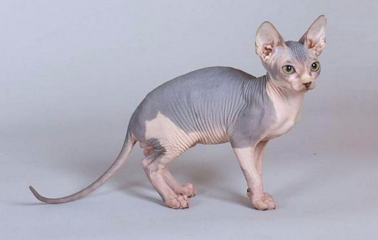

 Конечно, заметные характерные особенности канадских сфинксов – отсутствие растительности на теле и потрясающие складочки! Потрясать мир кошки этой породы стали относительно недавно. В 1966 году в Канаде родился первый котенок канадский сфинкс (никто еще об этом не знал). Единственного голенького мальчика среди всего помета обычной кошки назвали Пруном и его разведение позволило закрепить гены бесшерстности. Но до конца в тот момент заводчики так и не разобрались в механизме появления сфинксов. Вроде бы, как выглядит новая порода – всем понятно, а вот как добиться стабильности в потомстве? Вопрос оставался открытым почти 10 лет. На помощь пришел Эпидермис! Да, так, не без умысла, назвали лысого кота, который родился в Вадене (Миннесота). Там же вскорости на свет появилась кошечка подобного же типа, оказавшись в питомнике Z. Stardust, они дали старт породе и стали пра-пра-прародителями канадских сфинксов. Перелистывая историю породы, нужно ненадолго остановиться на главе под названием Бемби. Этого черно-белого бесшерстного кота нашли на улицах Торонто в 70-х годах прошлого же века. Говорят – он был прекрасен. Описание Бемби (экстерьер и характер) совершенно соответствовали его кличке. Но Бемби был дворовым котом и изрядно пострадал в уличных боях. Одноглазый и, увы, неспособный к размножению, Бемби прославился тем, что стал сфинском-долгожителем. Его поклонники вместе с ним самим отмечали 19-ый день рождения Бемби! Найденные с Бемби голые кошки Пинки и Палома были переправлены в Голландию, где и положили начало европейской линии канадских сфинксов. Но родина сфинксов — Канада и чтобы об этом никогда не забывали, название «канадский сфинкс» навеки вписано в фелинологию и в сердца поклонников породы! Описание породы канадский сфинкс канадский сфинкс Так сколько же всего сфинксов существует в мире? Поштучно пока их никто не пересчитывал, а вот голых пород всего три: петербургский сфинкс (более известный как питерболд), донской сфинкс (русская бесшерстная) и наш знакомец сфинкс канадский. Казалось бы, все три породы бесшерстные, а стало быть и одинаковые? Никогда такого не говорите влюбленным в канадских сфинксов хозяевам! Стандарт породы подскажет, как определить, что перед вами лысый кот канадский сфинкс и подчеркнуть особенности породы. У канадца среднего размера голова, по форме напоминающая клин с закругленным абрисом. Длина головы не намного больше ширины. Скулы заметные, выступающие, челюсть сильная, возможно короткое опушение: переносица широкая, а сам нос короткий, покрытый короткой же шерстью; уши широкие в основании, расставлены тоже широко. Сами уши всегда большие, у основания с наружной стороны могут быть опушены. Щеточки, кисточки – не допускаются; котята этой породы очень рано открывают глаза и тут же заглядывают вам в самую душу! Это правда – отзывы владельцев и городские легенды твердят о том, что только канадские сфинксы могут и любят долго, не моргая и не отворачиваясь, смотреть человеку в глаза. На самом деле, канадцы иногда даже рождаются зрячими, а глаза у них большие, по форме похожи на лимон. Расстояние между глазами чуть больше ширины глаз. Цвет глаз может быть любим, гармонирующим с окрасом животного; усов у них практически нет, но у отдельных представителей они могут сохраниться, стандарт это допускает. Телосложение канадского сфинкса – очаровательное! Очаровывают они грацией и изяществом. В их строении нет ни одной прямой резкой линии, они тягучи и плавны. Похожие на статуэтки, кошки породы канадский сфинкс средних размеров, они мускулисты и крепки. Живот не должен быть поджарым, а вот грудь должна быть широкой, в целом, силуэт напоминает спелую грушу. Из-за широкой грудной клетки передние лапы всегда широко расставлены. Сами конечности тонкие с длинными пальцами (такое строение называется «лапа обезьяны»). Задние конечности длиннее передних, именно этот факт влияет на их особенную походку. На кончиках лап может остаться немного пушка. кошка канадский сфинкс Хвост длинный, хлыстообразный, не опушенный, но вполне возможно, что именно у вашего канадца может вырасти львиный хвост – то есть, появится кисточка на кончике хвоста. Это не является дисквалификационным признаком. Хвост у канадских сфинков почти всегда свернут в бублик и прижат к телу. Удивительный факт – канадский сфинкс по факту всегда оказывается тяжелее, чем кажется. канадский сфинкс Этих лысых кошек не назовешь излишне крупными, вес взрослого животного от 3,5 до 6 кг. Кожный покров и окрас. Признаки шерсти могут проявляться только в виде минимального пушка на теле животного. На ощупь коты горячие и очень приятные – кожа сфинксов схожа с кожей ребенка. Канадский сфинкс славится своими складочками. Причем, кожи так много, что если канадца вытянуть во всю длину, то он все равно будет не гладким, а «складчатым». Складки обязательно должны быть на лбу, шее и на конечностях. Фото подтверждают, что канадцы – самые «складчатые» из всех сфинксов. Сейчас в разведении все больше животных, которые с возрастом остаются голыми, но теряют большую часть детского «капюшона». Желательно все же, чтобы гены вашего питомца позволили сохранить эти кожные отличия канадцев. Окрасы допускаются все – любой тип и в любой комбинации. Окраска может быть сплошная: черная, серая, шоколадная, лиловая, рыжая, цинамон, фавн, белая, черепаховая. Может быть табби, колор-пойнт и т.д. Характер По отзывам владельцев характер у канадских сфинксов – золотой! Они очень любвеобильны и будьте уверены, не упустят возможности забраться к хозяину на ручки. Или на голову – тут как получится. Их интеллект по уровню схож с интеллектом трехгодовалого ребенка. Вот такое дитё проявляет все признаки здравомыслия и совершенно не ревнует к другим животным, если они проживают совместно. Верность сфинксов поражает – они преданы хозяину всегда и готовы бесконечно его греть, развлекать и с ним разговаривать. Сфинксы товарищи гордые. Они не выпрашивают подачек, а сами предпочтут стянуть вкусняшку. Причем, сытость канадского сфинкса вовсе не гарантия целостности обеденного стола. лысая кошка канадский сфинкс По отношению к жизни складывается впечатление, что канадские сфинксы не до конца понимают, что они коты. Поведение и характер говорят в пользу того, что они считают себя людьми, ну или собаками, на крайний случай. При этом канадский сфинкс никогда не бывает агрессивным и может запросто вылечить легкую головную боль, поскольку у представителей этой породы явно есть дар целительства. В общем, горячее сердце канадского сфинкса распахнуто навстречу любви! Читайте также: Имена для сфинксов мальчиков и девочек — список. Здоровье канадский сфинкс с котенком А горячее у них не только сердце, но и тело! Отличительные признаки породы: обычная температура для канадского сфинкса — 38-38,5 градусов, а сердце у них бьётся в два раза быстрее, чем у других пород. К сожалению, канадские сфинксы предрасположены к приличному списку заболеваний. Среди основных угроз ожирение стоит на первом месте, так же могу быть (а могут и не быть): искривление хвостового отдела позвоночника, васкулиты кожи, врожденный заворот век, угревая сыпь, размягчение последнего хвостового позвонка, дерматиты, гиперплазия десны, гиперплазия и киста молочной железы и пр. Перечень внушителен, но если отнестись к здоровью питомца со всем вниманием, то большую часть этих подводных камней можно будет обойти. Важный момент! Кожа у канадских сфинксов такая плотная, что её очень трудно в некоторых местах проткнуть иглой. Средняя продолжительность жизни канадских кошек 13-15 лет. Но пример Бемби вдохновляет на то, чтобы канадские сфинксы преодолели планку в 17-19 лет!